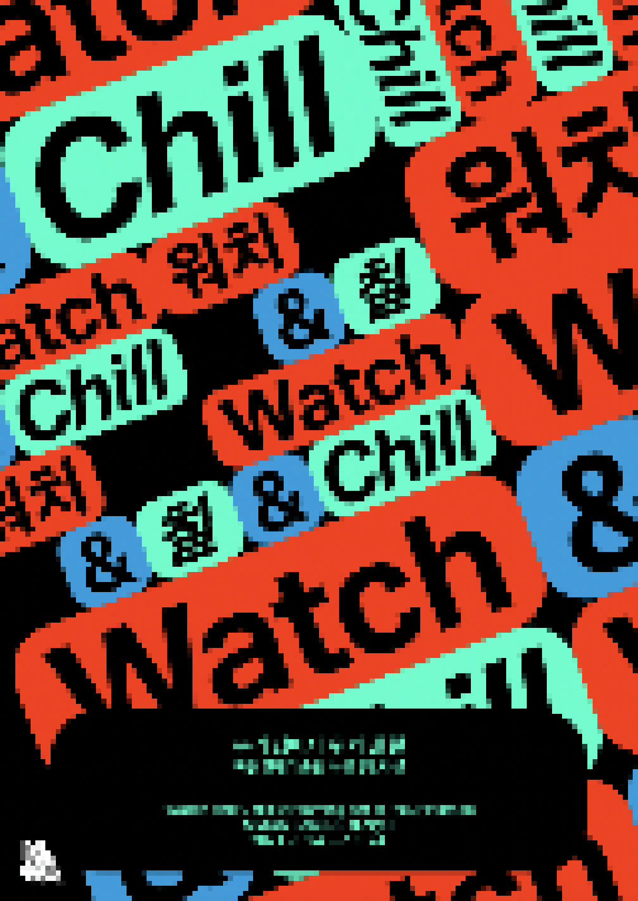

> title
우리 집에서, 워치 앤 칠
> content
《우리 집에서, 워치 앤 칠》는 미술관과 예술가, 그리고 관객이 미술을 공유하는 새로운 방식을 제안하기 위해 기획되었다. 아시아 4개 지역의 미술관이 협력하여 자체 온라인 스트리밍 플랫폼 '워치
앤 칠 (Watch
and Chill)'을 구축하여 영상 콘텐츠를 송출하고, 전시장 내에서 이를 물리적으로 구현함으로써 관람객에게 독특한 작품 감상의 기회를 제공한다. 네 가지의 주제로 구성된 이번 전시는 플랫폼의
주 소비 공간을
'집'으로 상정하며, 미디어 환경으로 인해 변화한 집의 다층적 연결성을 고찰한다.
1부 '거실의 사물들'에서는 집을 이루는 물건과 이들의 배치, 나열, 순환의 장면을 담은 작품을 소개한다. 작가들은 사물 사이의 관계뿐만 아니라, 사물과 인간, 나아가 사물과
사회의 관계로까지 그 의미를 확장
시킨다. 팬데믹 중 집에서 보내는 시간이 길어지면서 물건과 친밀함이 생기는 현상을 은유하며, 가정을 구성하는 물질과
이들에 투영된 개인과 집단의 경험, 무의식, 정체성의 문제를 다룬다.
2부 '내 곁에 누군가'는 안식처로서의 집이 다른 존재들의 개입과 침입으로 인해 영향을 받는 물리적, 정신적 측면을 사유한다. 작가들은 반려자, 반려 동·식물, 반려 로봇, 손님
혹은 침입자와 같이 일상의 시공간을
공유하는 존재들과 이들을 둘러싼 허구적 서사를 제시한다.
3부 '집의 공동체'는 전통적인 이웃 공동체와는 다른 대안적 군집의 형태를 제안한다. 광선으로 연결된 우리의 집은 아이러니하게도 고립을 야기하며, 날로 스마트화 되는 도시 속
우리는 광활한 자연을 꿈꾸기도 한다.
각기 다른 지역, 세대, 유형의 공동체가 마주한 환경의 변화와 이를 나름의 방식으로 적응하며 나타난 여러 삶의 유형들을 소개한다.
4부 '메타-홈'에서는 집 이상의 집, 가정의 초연결성(hyper-connectivity)을 다룬다. 작가들은 가상의 세계와 연동된 집의 모습, 디지털 시대의 존재 방식, 여러
차원으로의 공간 확장 가능성, 또
기술적 연결 너머의 정신적, 영적 영역의 연결 등 다양한 메타적 상상을 펼친다.
※ 협력기관: 필리핀 현대미술디자인미술관(MCAD), 태국 마이암현대미술관(MAIIAM), 홍콩 M+미술관
※ 온라인 플랫폼: https://watchandchill.kr (운영기간: 2021. 8. 24. ― 2022. 2. 28.)
